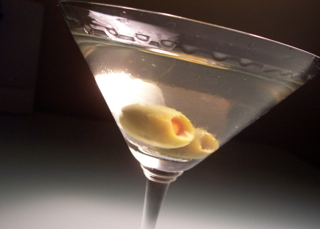

Dirty Martini

Description
Easy recipe for homemade Dirty Martini
- Prep: 1 mins
- Total: 1 mins
- Servings: 1
- Yield: 1 cocktail
Ingridients
- 6 fluid ounces vodka
- 1 dash dry vermouth
- 1 fluid ounce brine from olive jar
- 4 stuffed green olives
Steps
-
In a mixing glass, combine vodka, dry vermouth, brine and olives.
Pour into a glass over ice. Either drink on the rocks, or strain into a chilled cocktail glass.
Back